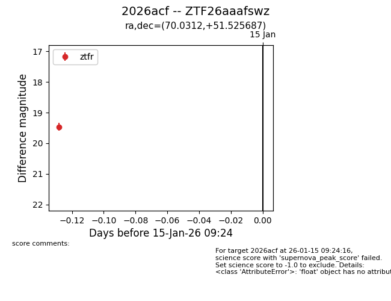
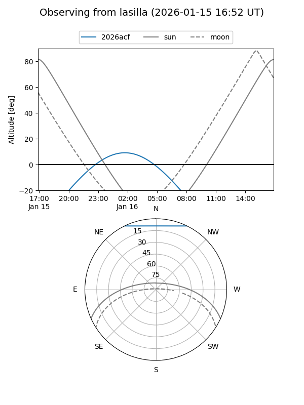
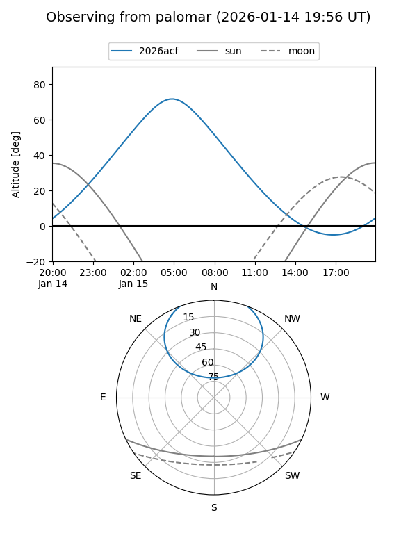

2026acf
Target 2026acf at 2026-01-15 09:25
Aliases and brokers:
FINK: link
Lasair: link
ALeRCE: link
TNS: link
YSE: link
alt names
ZTF26aaafswz (ztf,fink_ztf)
2026acf (tns,yse)
Coordinates:
equatorial (ra, dec) = 70.0312,+51.52569
equatorial (HMS+DMS) = 04:40:07.49,+51:31:32.47
galactic (l, b) = (154.5093,+3.25618)
Flags:
Photometry:
last ztfr=19.47
1 ztfr detections
Lightcurve

Visibility


Additional plots